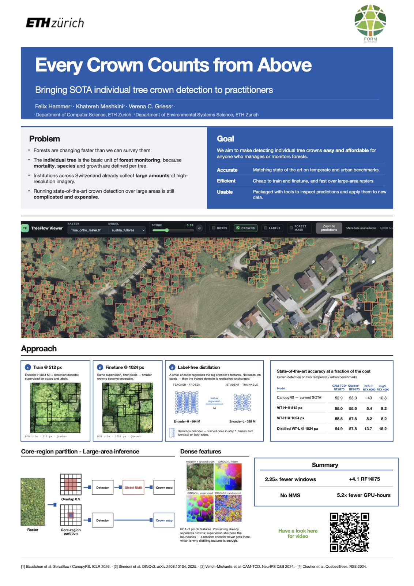

Teaching neural networks to detect trees
I had the pleasure to work for a year as a research assistant in the Forest Resource Management group (FORM) at ETH Zürich, with Dr. Khatereh Meshkini and Prof. Verena Griess.
Why trees?
Forests are changing faster than we can survey them. The individual tree is the basic unit of forest monitoring: mortality, species and growth are all defined per tree.
Switzerland already collects a lot of high-resolution aerial imagery, but running state-of-the-art tree detection over large areas is still complicated and expensive.
How to deal with few, partially annotated and noisy labels
The biggest bottleneck is both the quantity and the quality of labels, as they are expensive, time consuming and require trained eyes, which is not easy for a normal human. Often there are only few labels, and the data is only partially annotated.
We researched which properties of labels are most impactful on performance, and used semi-supervised pseudo-labelling to deal with that.
Bringing state of the art to practitioners
Then I was laying my eyes on understanding what is needed to match and exceed current state-of-the-art detection approaches. In terms of the model, I found easier and cheaper ways to train: overall lower complexity, cheap high-resolution finetuning, label-free distillation and faster inference than the current state of the art.
Most importantly, I worked on making large-area inference (pushing towards nation scale) fast, simple and embarrassingly parallel. I focused on the aggregation and developed a simple but effective inference scheme. For large maps, the usual approach is overlapping tiles plus a merging step (NMS). I replaced that with a core-region partition, where every crown is counted exactly once, and the only parameter that needs to be chosen for large areas is the confidence threshold.
Drag to compare. Same test map. Watch full screen: usual ↗ · ours ↗
Furthermore, I was working on tools to easily run inference on large areas and visualise the results.
Pretraining a foundation model
Lastly, I was researching pretraining a vision transformer foundation model on Swiss aerial imagery with self-supervised learning, and pushing its scale on 8×H100 through AWS. The paper is still work in progress.
Poster presentation at AI + ENV Summit 2026
I presented this poster at the AI + Environment Summit 2026.
